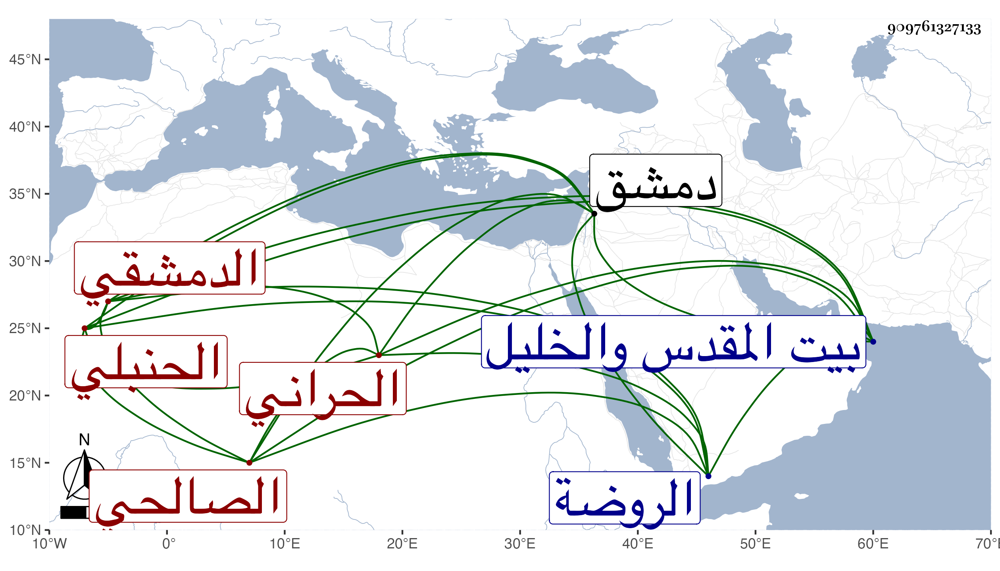

0902Sakhawi.DawLamic.ITO20230111-ara1.EIS1600.909761327133
Biography ID: 909761327133
502
أحمد بن محمد بن عبادة بن عبد الغني بن منصور الشهاب أبو العباس الشمس بن أبي عبد الله بن الشمس بن الفقيه الزين بن الجمال الحراني الأصل الدمشقي الصالحي الحنبلي الآتي أبوه ويعرف كهو بابن عبادة بالضم من بيت وجيه فعبادة وعبد الغني عند الذهبي وغيره . ولد في صفر سنة ثمان وثمانين وسبعمائة بدمشق ونشأ بها فقرأ القرآن على العلاء الشحام وغيره والعمدة والخرقي وعرضهما على العلاء بن اللحام والشهاب بن حجي وغيرهما وعلى ابن اللحام اشتغل في الفقه وكذا حضر فيه وهو صغير جدا عند ابن رجب وغيره وسمع على عائشة ابنة ابن عبد الهادي وناب في القضاء لأبيه ثم استقل به بعد وفاته فباشره بعفة ونزاهة وصرف قبل استكمال سنتين فلزم منزله منجمعا عن الناس وكتب بخطه تفسير ابن كثير وعرض عليه العود فأبى وحج مرتين وزار بيت المقدس والخليل وحدث سمع منه الفضلاء قرأت عليه وكان متواضعا بهيا حسن الشكالة مزجي البضاعة . مات في شوال سنة أربع وستين ودفن من يومه بمقبرتهم شرقي الروضة من سفح قاسيون رحمه الله .
